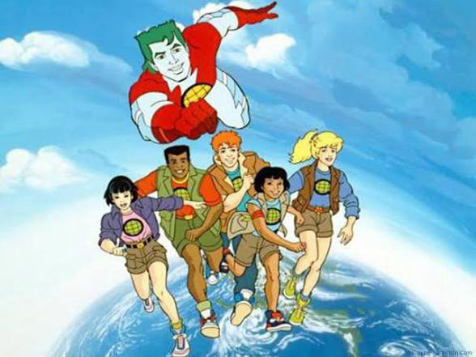
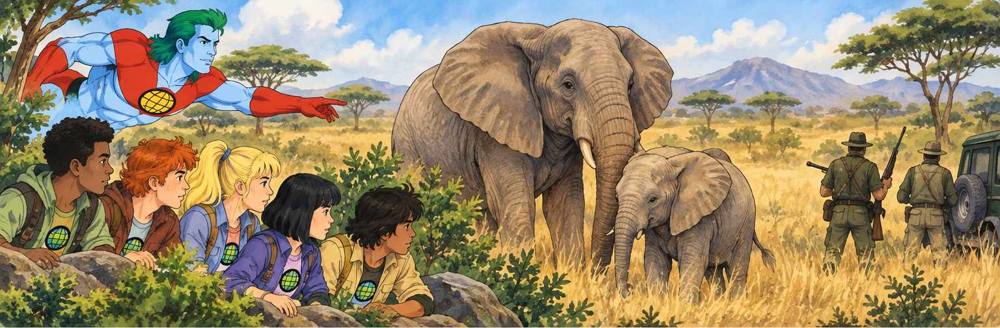
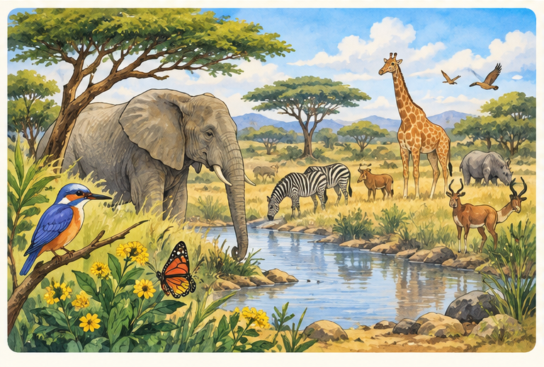
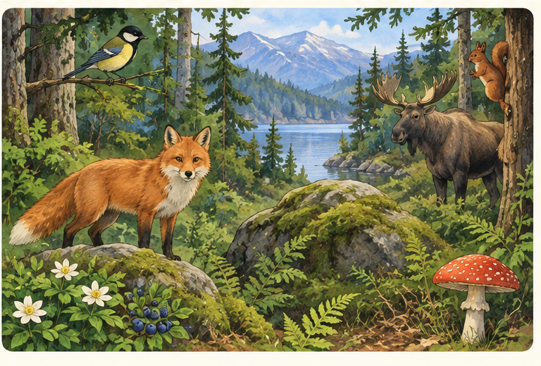

Captain Planet
Elefantene er i fare · forstå historien, finn ordene og bruk dem på en ny måte.

Captain Planet var en tegneserie som startet i 1990. Serien handlet om jorda, naturen og miljøet.
Gaia representerte jorda. Når naturen var i fare, ba hun fem ungdommer om hjelp. De het Kwame, Wheeler, Linka, Gi og Ma-Ti.
Hver av dem hadde en ring med en egen kraft: jord, ild, vind, vann eller hjerte. Når de fem kreftene ble samlet, kunne Captain Planet komme og hjelpe dem.
I historiene møtte de problemer som forurensning, dyr som kunne forsvinne og mennesker som ødela naturen.

I episoden «Last of Her Kind» er afrikanske elefanter i fare. De blir drept for elfenben.


På en øy finnes det en sjelden fugleart. Det finnes bare noen få fugler igjen.